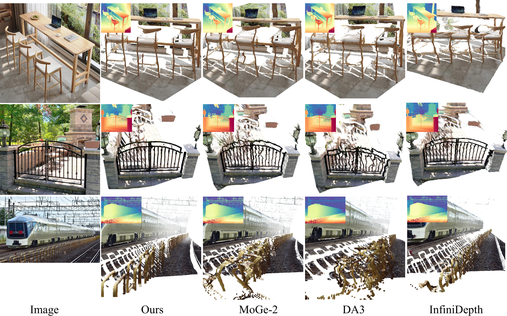
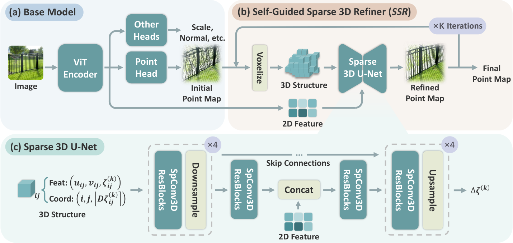
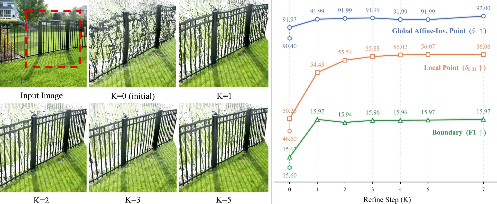
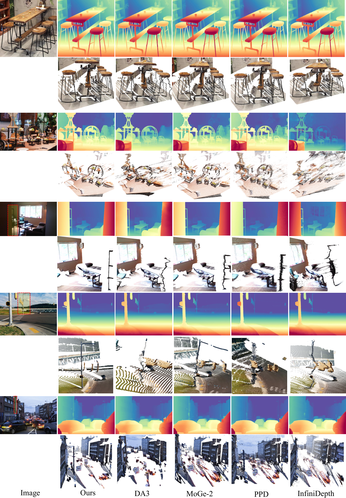
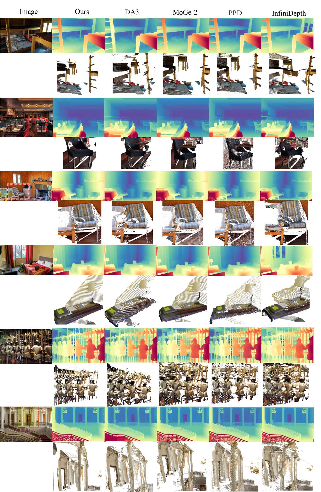
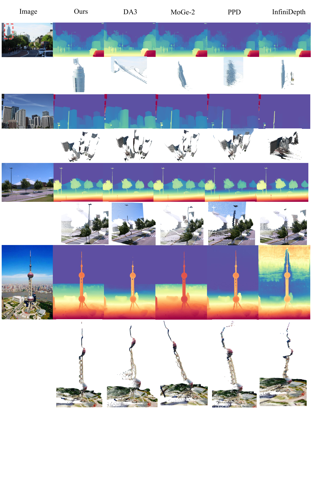
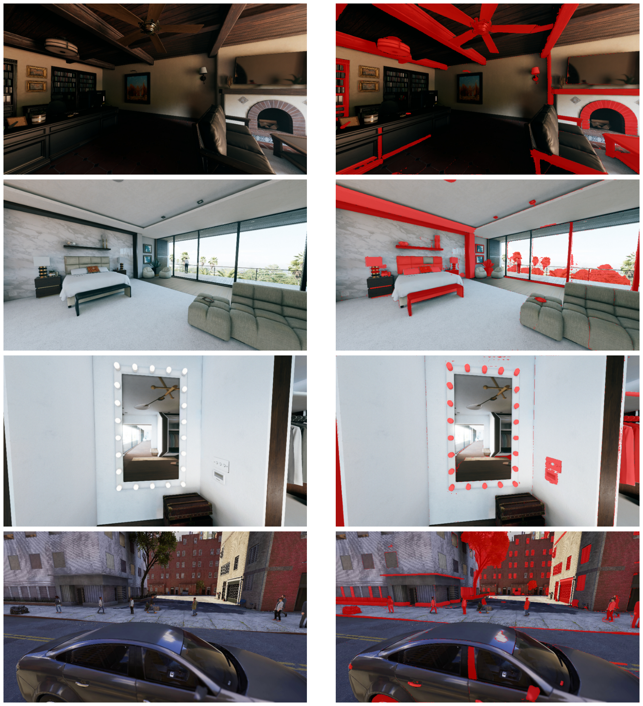

一句话:MoGe-3 在 MoGe-2 基础模型之上外挂一个自引导稀疏 3D 精炼器(SSR)——把初始点图抬到以 log-depth 量化的稀疏体素壳上,用稀疏 3D 卷积按「真实 3D 邻域」而非「图像面邻近」聚合特征,迭代预测 log-depth 残差,把栅栏、灯杆这类细长结构的扭曲失真修回来,同时保持 metric-scale 输出与接近实时的速度。
问题-方法-结果:现有单目几何模型(2D 卷积解码器 / VAE 解码 / 2D UV query 的 MLP 头)都在 2D 参数化里解码 3D 几何,特征交互由图像面距离主导,深度不连续处的前背景特征被错误混合,细长结构被过度平滑(§1)。MoGe-3 保留强 2D 基础模型做外观理解,把几何建模搬到 3D 空间:每像素恰占一个体素(共 $HW$ 个占用体素,计算量随占用线性),稀疏卷积只在 $|Δζ|≤1/D$ 的 3D 邻域内聚合。结果:9 个 zero-shot benchmark 上全局/局部/边界指标全面 SOTA(Table 1),ViT-L 默认模型局部点图阈值精度 $\delta_{0.01}^{p}$ 从 MoGe-2 的 46.6 提到 55.9,延迟 121 ms@700²(A100 FP16,Table 2)。
configs/train/v3.json 中 refiner_depth_resolution=256;论文附录 A.2 写 2D heads 峰值学习率 $1×10^{-4}$,配置文件中为 1e-5。两处均以代码为当前实现真值,差异原因【待核实】可能论文成稿后训练配置又调整过。
作者对现有 SOTA 单目几何模型的失效描述非常具体,不是泛泛的"效果不好":
前馈模型的主流解码方式(Depth Pro、MoGe-2、UniK3D 等;§1 引 [18,30,4,44,45,13,54,58])。卷积核在图像网格上滑动,一根前景细杆与背后远墙在 2D 上相邻,特征被同一卷积核混合 → 杆被"抹"进墙里。
扩散式深度模型在 latent 空间生成、VAE 解码回深度图(§1 引 [16,9],如 Pixel-Perfect Depth 路线)。解码器同样是 2D 卷积, latent 中的深度不连续在解码时被平滑先验抹平。
近期方法在 patch latents 或 2D UV 查询上接 MLP 头(§1 引 [51,58],如 InfiniDepth)。逐像素独立回归虽无显式卷积混合,但 query 本身按图像网格组织,缺乏跨像素的 3D 感知交互。
此外,作者承认回归范式的固有局限(§5 Limitations):"regression-based paradigm inherently struggles to resolve pixel ambiguity along object boundaries... introduces 'fly-points'",即边界像素的深度在原理上二义,完全锐利的深度边无法由回归得到——这是本文没有解决、留待生成式方法(如 Pixel-Perfect Depth [51])融合的方向。
MoGe(CVPR 2025 oral 级别影响力,affine-invariant 点图 + 最优监督)→ MoGe-2(2025-07,metric scale + 数据精炼锐化细节)→ MoGe-3(本文,2026-07,3D 稀疏精炼修细节)。MoGe-3 的 base 直接初始化自 MoGe-2(§1:"initialize the base geometry estimator from MoGe-2"),SSR 是外挂模块,可视为"第三代 = 第二代 + 3D 精炼器 + 联合训练"。库内此前未收录 MoGe 系列笔记,本篇为系列首篇。
moge/model/v3.py:208-215):dense per-pixel 3D 点图 $\boldsymbol{P}$(metric scale)、深度图、有效掩码 mask、表面法向 normal、相机内参(由点图恢复 focal/shift)。metric 点图 = 预测的 metric scale $×$ 仿射不变点图 $\boldsymbol{P}$(§3.1);base 的 $\boldsymbol{P}$ 仅在光轴仿射变换 $(X,Y,Z)\mapsto(sX,sY,sZ+t)$ 下被监督(式(1))。MoGe-3 = (a) Base model(MoGe-2 初始化,出初始点图与 2D 特征)+ (b) SSR 迭代精炼(K 次循环:体素化 → 稀疏 3D U-Net → 残差更新)。图 2 为论文官方结构图(Fig. 2)。

| 符号 | 定义 | 出处 |
|---|---|---|
| $\boldsymbol{P}$ / $\boldsymbol{p}_{ij}=(X_{ij},Y_{ij},Z_{ij})$ | base 输出的 dense 点图 / 像素 $(i,j)$ 的 3D 点 | §3.1, §3.2 |
| $\boldsymbol{q}_{ij}=(u_{ij},v_{ij},\zeta_{ij})$ | 分解表示(factorized coordinates):$u=X/Z,\ v=Y/Z,\ \zeta=\log Z$ | 式(2) |
| $\boldsymbol{F}$ | DINOv2 encoder 的 dense 特征图,精炼阶段复用(注入 U-Net bottleneck) | §3, §3.2.2 |
| $D$ | 体素分辨率(log-depth 量化因子);论文默认 $D{=}200$;代码 refiner_depth_resolution=256(差异见 §10) | §3.2.1, §4.5 |
| $\mathcal{V}^{(k)},\ \boldsymbol{c}_{ij}^{(k)}$ | 第 $k$ 次迭代的稀疏体素壳;体素坐标 $(i,j,\lfloor D\cdot\zeta_{ij}^{(k)}\rceil)$;$l{=}0$ 层恰 $HW$ 个占用体素 | 式(3) |
| $\mathcal{V}^{(k),l}=\{\lfloor\tfrac{1}{2^{l}}\boldsymbol{c}_{ij}\rfloor\}$ | U-Net 第 $l$ 层的稀疏体素集(动态稀疏下采样) | §3.2.2 |
| $\Delta\zeta_{ij}^{(k)}$ | U-Net 输出的标量 log-depth 残差 | §3.2.2, §3.2.3 |
| $K$ | 精炼迭代次数;训练 K=3,推理默认 K=3;消融训练 K=3、评估 K=5;泛化测试 K∈{0,…,7} | §4.1, §4.5 |
| $s,\ t_z$(亦作 $t$) | 光轴仿射对齐的尺度与平移(式(1)、式(8)) | 式(1), 式(8) |
| $w_{ij}\propto 1/\widehat{Z}_{ij}$ | 全局损失的深度反比权重 | 式(7) |
| $\boldsymbol{r}_{ij}^{(k)}$ | 局部损失的分区参考点图(0.5 概率取 GT,0.5 取当前对齐预测) | 式(9) |
| $\mathcal{G}_{\alpha,g}^{(k)},\ \boldsymbol{\pi}_{\alpha}^{(k)}$ | 径向分区得到的 3D 局部区域与分区函数;$\alpha\in\{4,16,64\}$ | 式(10), A.1 |
| $\boldsymbol{t}_{\alpha,g}^{(k)}$ | 局部区域的 3-DoF 平移(共享全局尺度 $s^{(k)}$) | 式(11)(12) |
| $\mathcal{M}$ / $\boldsymbol{N}$ / $\boldsymbol{M}$ | 有效像素掩码 / 法向 / 掩码(预测与 GT) | 式(7)(14) |
| $(\lambda_g,\lambda_\ell,\lambda_e,\lambda_m,\lambda_n,\lambda_s)$ | 损失权重 = $(1.0,1.0,1.0,0.1,0.1,0.1)$ | A.2 |
| $r_s(p),\ \hat{\sigma}_s$ | 评测侧局部 mask 构建的多尺度 Laplacian 残差与 MAD 鲁棒标准差 | B.1 |
| $\rho_i=|S_i\cap\mathcal{S}|/|S_i|$ | SAM2 分段的支持密度(局部 mask 扩展保留条件) | 式(16) |
| $s^{*},\ t_i$ | 局部评测协议的全局尺度与 per-segment 平移 | 式(17)(18) |
Base model 即 MoGe-2 架构(v3.py:17 class MoGeModel(MoGeModelV2)),初始化自 MoGe-2 权重(§1)。论文未给出 base 的结构细节(指向 MoGe-2 [45]),以下全部取自官方配置:
| 组件 | 配置(来源:configs/train/v3.json) |
|---|---|
| Encoder | DINOv2 ViT-L/14(dinov2_vitl14),取中间层 [5,11,17,23],dim_out=1024(v3.json:4-13);ViT-G 变体同理 |
| Neck(共享) | 5 级金字塔 dim_res_blocks=[1024,256,128,64,32],num_res_blocks=[0,2,2,2,0],重采样 [conv_transpose×3, bilinear](v3.json:14-45) |
| points_head | 同构 5 级,num_res_blocks=[0,1,1,1,0],输出 3 通道(v3.json:46-83) |
| normal_head / mask_head | 同构,分别输出 3 / 1 通道(v3.json:84-159) |
| scale_head | MLP dims=[1024,1024,1024,1],作用于 cls_token,输出全局 metric scale(v3.json:160-167;v3.py:156) |
| num_tokens_range | [1200,3600](v3.json:168-171)——推理时按 resolution_level 0~9 线性映射(v3.py:271-273),700² 约对应默认档 |
| 参数量 | ViT-L 整模型 370M,ViT-G 1.25B(README 模型表) |
点图以分解坐标表示(式(2))——这是 SSR 的前提:把 $(X,Y,Z)$ 分解为射线方向 $(u,v)$ 与 log 深度 $ζ$,精炼只动 $ζ$:
base 的监督是光轴仿射不变的(式(1)),因此 base 输出本身不带绝对尺度;metric 尺度由 scale_head 单独预测并在最后相乘(§3.1;v3.py:321-323)。
num_tokens 与宽高比解出 base 网格 $(b_h,b_w)$(v3.py:127-132);encoder_channels;raw_coord 形状 $[B,3,H,W]$,通道序 $(x/z,\ y/z,\ \log z)$(v3.py:163-164),经 remap_output='exp'(v3.py:38)映射回点图;infer,v3.py:219-381):逐步恢复 (focal, shift)(v3.py:304-312)、force_projection 用内参重投影点图(v3.py:318-319)、乘 metric scale(v3.py:321-323)、mask 过滤无效点(置 inf,v3.py:350-356)。base 参与全部几何损失(式(6)中 $k{=}0$ 项)与三个辅助损失(mask BCE、法向、metric scale,式(14)),详见 §8 损失总表。训练数据上,base 用合成+真实全混合,refiner 只收合成样本的梯度(§3.3,原因见 §8.3)。
体素化是 SSR 的"地基":它决定了 3D 卷积把哪些点当邻居。设计要点是让壳同时满足投影对齐、尺度不变、几何相干三条性质(§3.2.1)。
图像轴 $(i,j)$ 天然离散;深度轴把 log-depth $ζ$ 乘以分辨率 $D$ 后四舍五入量化。每个像素恰好映射到一个体素 → $l{=}0$ 层形成"恰有 $HW$ 个占用体素的薄流形壳"(§3.2.1),计算量对占用体素数线性。
体素网格的 $(i,j)$ 两轴与图像像素网格完全对齐 → 无需学习的投影/反投影,2D 特征可按 $(i,j)$ 直接 gather(见 §6.3),且壳分辨率随输入分辨率自适应。
量化作用在 $\log Z$ 上:乘性深度误差(全局尺度 $s$)在 log 域变成加性常数,被 per-batch 的 z-offset 吸收(源码 v3.py:88-89)→ "shell density and connectivity remain invariant to metric scale transformations"(§3.2.1)。这正好匹配 base 的仿射不变监督。
3×3×3 稀疏卷积的邻居 ⟺ 图像相邻且 $|ζ_{ij}-ζ_{i'j'}|≤1/D$——深度差超过一个量化格的两个表面在 3D 网格上不相邻,特征自然解耦,"preventing the 'bleeding' and 'twisted' artifacts inherent in 2D-based feature mixing"(§3.2.1)。
| 步骤 | 张量操作(形状) | 代码 |
|---|---|---|
| 输入 | point_coord: $[B,H,W,3]$,通道 $(x/z,y/z,\log z)$ | v3.py:60-67 |
| 量化 | zq = round(logz * refiner_depth_resolution) → int64 | v3.py:86-87 |
| 平移 | per-batch z-offset:$z_{idx}=z_q-\min(z_q)$;$z_{extent}=\max(z_{idx})+1$(动态深度范围) | v3.py:88-90 |
| 坐标组装 | coords: $(M,4)$ int32,列 (batch, i, j, z_bin),$M=B\cdot H\cdot W$ | v3.py:92-95 |
| 特征 | feats: $(M,3)$ fp32(即分解坐标本身作为输入特征) | v3.py:97 |
| 输出形状 | shape: $[B,H,W,z_{extent},3]$(稀疏张量的稠密形状描述) | v3.py:98 |
configs/train/v3.json:194 为 "refiner_depth_resolution": 256。两者方向一致(论文消融显示 D=200 与 D=300 之间是平台期),但数值不等,【待核实】发布配置可能在论文投稿后重新调过。复现时以代码为准。体素化本身无参数、无监督(纯离散化操作);梯度通过"残差加回 $ζ$"的路径回流(见 §7),体素坐标不可微也不需要可微——每步重新体素化是带停梯度的硬重离散化(v3.py:173 current_coord.detach())。
论文正文未给出 U-Net 的层数/通道数(仅 Fig. 2(c) 示意),以下结构全部来自源码 moge/model/modules/sparse_unet.py 与 configs/train/v3.json:172-194,是本笔记相对论文的增量信息。
| 层级 | 操作 | 输入形状 → 输出形状 | 说明 |
|---|---|---|---|
| input_proj | Linear 3→32 | $(M,3)\to(M,32)$ | 分解坐标 $(u,v,ζ)$ 直接作输入特征(sparse_unet.py:74) |
| down_stages[0] | SparseResBlock3d ×1 @32ch | $(M,32)$ | 每级 1 个残差块(encoder_blocks_per_level=1);块 = LayerNorm(ε=1e-6)+SiLU+3×3×3 子流形稀疏卷积 ×2,conv2 零初始化(flex_sparse_blocks.py:49-74) |
| PoolDown ×2 | mean pool + Linear 32→64 | 体素数 $\lceil\cdot/2\rceil^3$ 聚合,$(M',64)$ | |
| down_stages[1..3] + PoolDown | 64→128→256 | 逐级减半 | |
| down_stages[4] | SparseResBlock3d ×1 @512ch | $(M^{(4)},512)$ | |
| 2D 特征注入 | gather + Linear 1026→512 + concat + MLP | $(M^{(4)},512)\oplus(M^{(4)},512)\to(M^{(4)},512)$ | 见 §6.3 |
| bottleneck_stage | SparseResBlock3d ×1 @512ch | $(M^{(4)},512)$ | bottleneck_blocks=1 |
| NearestUp ×2 + up_stages | 最近邻上采样 + Linear,加性 skip | 512→256→128→64→32 | 每级 1 块(decoder_blocks_per_level=1);skip 为相加非拼接(sparse_unet.py:234) |
| out_proj | Linear 32→1,零初始化 | $(M,32)\to(M,1)$ | 输出 log-depth 残差;零初始化使初始为恒等映射(sparse_unet.py:114, 120-122) |
配置原值:model_channels=[32,64,128,256,512],downsample_factors=[2,2,2,2],encoder_downsample=16(代码断言 $16=\prod$ downsample_factors,sparse_unet.py:64-65),in_channels=3, out_channels=1, encoder_channels=1026。
flex_gemm(JeffreyXiang/FlexGEMM,钉在 commit b2fadb29,pyproject.toml:28)——即"输出体素集 = 输入体素集"的稀疏卷积,不在空处生发新体素,保证壳拓扑不被卷积撑爆。通道数 ≥128 时用 masked_implicit_gemm,否则 implicit_gemm(flex_sparse_blocks.py:15-23)。论文说"at the lowest resolution level, the encoded voxels are concatenated with 2D features F"(§3.2.2)。源码给出精确机制:
encoder_feature(形状 $[B,1026,H/16,W/16]$,即 DINO 最粗层 + UV)上按 $(b,:,i,j)$ 索引取值(sparse_unet.py:154-168 _sample_encoder_feature)——注意 $z$ 轴被忽略:同一射线上不同深度的体素拿到同一份 2D 特征(论文:"Voxels sharing an image location but differing in depth duplicate the same 2D feature",§3.2.2);encoder_fuse,sparse_unet.py:75),与体素特征 concat 后经 fuse_proj(Linear→SiLU→Linear,sparse_unet.py:77-81)融合回 512 维;.T)→ 加性 skip → 残差块;无独立监督;通过残差更新后的点图参与 $\mathcal{L}_{geo}^{(k)}$($k≥1$,式(6)(7)(11)(13))。训练前两阶段梯度隔离见 §8.3(refiner_detach_backbone_until=5001)。
三个要点:
_refine_logz → _voxelize 重建 coords。
| 路径 | 可导性 | 代码 |
|---|---|---|
| 图像 → base → $\boldsymbol{q}^{(0)}$ | 可导(base 正常训练) | v3.py:151-164 |
| $ζ^{(k)}$ → 体素坐标 | 停梯度(current_coord.detach()),量化本身不可导 | v3.py:173 |
| 2D 特征 $\boldsymbol{F}$ → refiner | 由 refiner_detach_backbone 开关:前 5000 步 detach(隔离),之后随联合训练导通 | v3.py:172;train_moge3.py:329-335;refiner_detach_backbone_until=5001(v3.json:267) |
| $\Deltaζ^{(k)}$ → $ζ^{(k+1)}$ → 损失 | 可导(残差加法) | v3.py:110, 174 |
apply_steps 数量均摊。另外 affine_invariant_global_loss 在 refine 步复用 step-0 解出的尺度 $s$,只对齐 z-shift(train_moge3.py:383-385 注释:"the alignment only solves the z-shift and the loss stays scale-sensitive")——防止每步重新解尺度导致监督信号漂移。推理若 return_per_step=True,每一步的点图都独立恢复 (focal, shift)(v3.py:304-312,注释:"refinement modifies logz which changes the 3D shape, so focal recovered from each step's point map differs slightly"),逐步 mask 自洽($d>0$ 过滤,v3.py:336)。最终输出的内参对应最后一步。
其中 $\mathcal{L}_{geo}^{(k)}=\mathcal{L}_{global}^{(k)}+\mathcal{L}_{local}^{(k)}+\mathcal{L}_{edge}^{(k)}$。注意求和从 $k{=}0$ 起:base 初始预测也被同一套几何损失监督(§3.3)。
| 损失项 | 公式 | 权重 | 作用 | 出处 |
|---|---|---|---|---|
| $\mathcal{L}_{global}^{(k)}$ | $\langle w_{ij}\|s^{(k)}\boldsymbol{p}^{(k)}_{ij}+t_z^{(k)}\boldsymbol{e}_z-\hat{\boldsymbol{p}}_{ij}\|_1\rangle_{(i,j)\in\mathcal{M}}$,$w_{ij}\propto 1/\hat{Z}_{ij}$;$(s,t_z)$ 为闭式 weighted-median 解(式(8)),在低分辨率副本(align_resolution=48)上求解 | 1.0 | 全局光轴仿射对齐监督,每个精炼步都施加 | 式(7)(8);v3.json:271-281 |
| $\mathcal{L}_{local}^{(k)}$ | $\sum_{\alpha\in\{4,16,64\}}\langle w_{ij}\|s^{(k)}\boldsymbol{p}^{(k)}_{ij}+\boldsymbol{t}_{\alpha,g}^{(k)}-\hat{\boldsymbol{p}}_{ij}\|_1\rangle_{\mathcal{M}}$;径向分区 $\boldsymbol{\pi}_{\alpha}$ 量化投影方向与 log 距离(式(10)),每区域解 3-DoF 平移(式(12)),共享全局 $s^{(k)}$;参考图 0.5/0.5 随机取 GT 或当前预测(式(9)),分区前加随机旋转缩放扰动 | 1.0(每个 α 等权) | 惩罚全局对齐遗漏的局部失真,"reducing over-smoothing across local depth discontinuities" | 式(9)-(12);v3.json:282-317 |
| $\mathcal{L}_{edge}^{(k)}$ | $\frac{1}{\min(H,W)\cdot|\mathcal{D}_d|}\sum_{(i,j)\in\mathcal{D}_d}\big(\angle(\partial_x\boldsymbol{p}_{ij},\partial_x\hat{\boldsymbol{p}}_{ij})+\angle(\partial_y\boldsymbol{p}_{ij},\partial_y\hat{\boldsymbol{p}}_{ij})\big)$ | 1.0 | 边缘角度监督(表面切向一致) | 式(13);v3.json:318-324 |
| $\mathcal{L}_{mask}$ | $\mathrm{BCE}(\boldsymbol{M},\hat{\boldsymbol{M}})$ | 0.1 | 有效像素掩码辅助监督 | 式(14);v3.json:338-343 |
| $\mathcal{L}_{nml}$ | $\langle\angle(\boldsymbol{N},\hat{\boldsymbol{N}})^2\rangle$ | 0.1 | 法向辅助监督 | 式(14);v3.json:332-337 |
| $\mathcal{L}_{scale}$ | $\mathbb{1}(\hat{s}>0)\cdot(\log s-\log\hat{s})^2$ | 0.1 | 全局 metric scale 辅助监督(仅 metric 数据) | 式(14);v3.json:326-331 |
apply_steps=[0,1,2,3] 全部迭代步施加完整几何损失。这解释了"refiner 的梯度只来自合成数据"的实现方式——合成样本走 refine pipeline 跑 K 步,真实样本走 norefine pipeline 只跑 base(refine_steps=0)。refiner_detach_backbone_until=5001 + out_proj 零初始化 → refiner 从恒等映射起步,"learn residual corrections starting from a known-good initialization"。get_refine_accumulation_schedule(train_moge3.py:72-84)在梯度累积微批内按配额调度——50% 微批走合成数据(refine_steps=3),50% 走真实数据(refine_steps=0)。"the refiner receives gradients only from synthetic samples, whose pixel-accurate ground truth is essential for learning sharp and geometrically correct residual corrections, while the base model is supervised on the full mixture"(§3.3)。3D Ken Burns, ApolloSynthetic, EDEN, GTA-SfM, Hypersim, IRS, MatrixCity, MidAir, MVS-Synth, Objaverse, OmniWorld, Structured3D, Synscapes, Synthia, TartanAir, UnrealStereo4K, UrbanSyn。
注:论文列 17 个,代码 refine_data 有 18 条(TartanAir 与 TartanAirV2 并列),计数口径差异,非数据冲突。
A2D2, ARKitScenes, Argoverse2, BlendedMVS, MegaDepth, ScanNet++, Taskonomy, Waymo。真实深度有噪声/空洞,故不用于训练"锐利修正"的 refiner。
| 超参 | 论文 A.2 | 代码 configs/train/v3.json | 一致性 |
|---|---|---|---|
| 优化器 | AdamW($\beta_1{=}0.9,\beta_2{=}0.999$,wd $10^{-2}$),梯度裁剪 $\|g\|_2≤1.0$ | AdamW 三参数组(v3.json:196-233) | ✓ |
| 峰值学习率 | refiner $2×10^{-4}$;2D heads $1×10^{-4}$;DINO backbone $5×10^{-6}$ | refiner 2e-4(v3.json:220);head 1e-5(v3.json:210);backbone 5e-6(v3.json:230) | refiner/backbone ✓;heads 论文 $10^{-4}$ vs 代码 $10^{-5}$,差 10× 【待核实】 |
| LR schedule | backbone 前 1000 步冻结,线性 warmup 至 2000 步;backbone 与 2D heads 每 25000 步衰减,refiner 每 10000 步衰减 | max(0,min(1,(epoch-1000)/1000)) warmup ✓;0.5**floor(epoch/25000)(head/backbone)✓;refiner 衰减含 /10000 项 ✓(v3.json:234-263) | ✓ |
| batch / 硬件 | global batch 96,16×A100,混合精度(DINO encoder bf16,其余 fp32) | 训练脚本支持 gradient accumulation 配额调度;仓库未含集群启动脚本 | ✓(论文值) |
| refiner 隔离 | 前 5000 步 detach,之后全梯度联合优化 | refiner_detach_backbone_until=5001(v3.json:267)✓ | ✓ |
| 训练总步数/时长/训练分辨率 | 未披露 | 配置无 num_iterations(CLI 传入) | —(双方均无) |
训练时 num_tokens 在每个微批随机采样(train_moge3.py:327),推理时由 resolution_level 决定;CLI 入口 moge infer --version v3 --pretrained CKPT --refine_steps 3(README:242)。
本节全部基于 microsoft/MoGe 仓库 depth-1 克隆(2026-10-09,默认分支含 v3)直读,引用格式 file:line。克隆目录已删除,关键行已抄录于此。
moge/model/v3.py + configs/train/v3.json + moge/train/train_moge3.py 并入主仓库;model_version="v3"(v3.json:2)。torch>=2.4、torchvision>=0.19、flex-gemm @ git+https://github.com/JeffreyXiang/FlexGEMM.git@b2fadb29——FlexGEMM 是 Jianfeng Xiang(本文作者之一)的 Triton 稀疏 GEMM 库,提供 SubmanifoldConv3d/SparsePool3d/SparseUpsample3d 与 NeighborCache。README 明确 macOS 不支持(Triton 无 macOS wheels,README:55)。Ruicheng/moge-3-vitl(370M)、Ruicheng/moge-3-vitg(1.25B)(README 模型表)。| 项目 | 论文 | 代码 | 结论 |
|---|---|---|---|
| 体素分辨率 D | 默认 $D{=}200$(§3.2.1, Table 3 ⋆) | refiner_depth_resolution: 256(v3.json:194) | 不一致;【待核实】发布配置或重新调过,复现以代码为准 |
| 2D heads 峰值 LR | $1×10^{-4}$(A.2) | lr: 1e-05(v3.json:210) | 不一致,差 10×;【待核实】 |
| refiner / backbone 峰值 LR | $2×10^{-4}$ / $5×10^{-6}$(A.2) | 2e-4 / 5e-6(v3.json:220,230) | 一致 ✓ |
| refiner 隔离步数 | 前 5000 步 detach(A.2) | refiner_detach_backbone_until: 5001(v3.json:267) | 一致 ✓(off-by-one 为区间边界写法) |
| 默认精炼步数 | K=3 训练/推理(§4.1) | refine_steps: 3(v3.json:265);infer(refine_steps=3)(v3.py:228) | 一致 ✓ |
| 损失权重 | $(1,1,1,0.1,0.1,0.1)$(A.2) | v3.json:271-343 逐项一致 ✓ | 一致 ✓ |
| 合成数据计数 | 17 个(A.3) | refine_data 18 条(TartanAir/V2 并列) | 口径差异,非冲突 |
| U-Net 层数/通道 | 未披露 | 5 级 [32,64,128,256,512],每级 1 块(v3.json:172-193) | 代码为唯一来源 |
| 项目 | 数值 | 来源 |
|---|---|---|
| 推理延迟(ViT-L, K=3, A100 FP16) | 89 ms @484²;121 ms @700²;154 ms @840² | 论文 Table C.4 |
| 推理延迟(ViT-G, K=3, A100 FP16) | 115 ms @484²;177 ms @700²;234 ms @840² | 论文 Table C.4 |
| SSR 相对 base 的开销(ViT-L FP16) | MoGe-2 700²=39 ms → MoGe-3 700²=121 ms,refiner 约 +82 ms/3 步 ≈ 27 ms/步 | Table C.4 推算 |
| 训练硬件 | 16×A100,global batch 96,混合精度(DINO bf16,其余 fp32) | 论文 A.2 |
| 训练总时长/步数 | 未披露 | — |
| 参数量 | ViT-L 370M / ViT-G 1.25B(含 base+refiner) | README 模型表 |
| 显存 | 论文/README 均未报告 【待核实】;3090 24GB 跑 ViT-L FP16 推理可行性分析见 §14 | — |
moge infer --version v3 --pretrained PATH --refine_steps 3,v3 不像 v1/v2 有默认权重路径。enable_gradient_checkpointing 会包装全部残差块(sparse_unet.py:144-147),训练大分辨率时省显存。| 方法 | Rel_d↓ (局部深度) | δ₀.₀₁_d↑ | Rel_p↓ (局部点) | δ₀.₀₁_p↑ | 边界 F1↑ | Rel_d↓ (相对深度) | δ₁_d↑ | Rel_p↓ (相对点) | δ₁_p↑ | Rel_d↓ (metric深度) | δ₁_d↑ |
|---|---|---|---|---|---|---|---|---|---|---|---|
| Depth Pro | 4.15 | 46.9 | 3.01 | 45.2 | 16.3 | 8.10 | 91.3 | 11.1 | 87.6 | 29.0 | 54.0 |
| UniDepth V2 | 5.60 | 45.3 | 4.60 | 42.6 | 14.5 | 6.98 | 92.8 | 10.2 | 88.6 | 23.7 | 71.2 |
| Depth Anything 3 | 10.5 | 41.8 | 7.39 | 44.7 | 6.61 | 7.89 | 91.4 | 10.6 | 87.5 | 17.4 | 70.1 |
| UniK3D | 5.52 | 46.2 | 4.37 | 45.0 | 15.1 | 6.95 | 92.8 | 9.63 | 89.6 | 17.9 | 77.8 |
| Pixel-Perfect Depth | 5.24 | 39.8 | 4.39 | 39.1 | 12.7 | 7.17 | 92.5 | 20.3 | 69.8 | - | - |
| InfiniDepth | 5.82 | 43.2 | 4.29 | 43.7 | 19.3 | 8.15 | 91.1 | 11.6 | 87.6 | - | - |
| MoGe-2 | 3.81 | 47.1 | 3.19 | 46.6 | 15.6 | 5.98 | 94.1 | 8.73 | 90.4 | 15.6 | 77.3 |
| Ours (ViT-L) | 3.76 | 52.5 | 2.79 | 55.9 | 16.0 | 5.52 | 94.7 | 7.91 | 92.0 | 15.0 | 82.7 |
| Ours (ViT-G) | 3.66 | 54.1 | 2.80 | 56.8 | 17.3 | 4.80 | 95.6 | 7.43 | 92.4 | 15.8 | 82.7 |
读法(作者结论 §4.3,已逐项复核):局部 $\delta_{0.01}^{p}$ 55.9 vs 次优 MoGe-2 46.6(+9.3 个点);"achieves the best global performance across all three evaluation settings"——ViT-L 在相对深度(5.52/94.7)、相对点(7.91/92.0)、metric 深度(15.0/82.7)六格全胜成立;边界 F1 第一为 InfiniDepth 19.3,MoGe-3 第三(16.0),作者原文承认并注明 Depth Pro 跑在 1536²(约为 840² 的 3.4× 像素)。ViT-G 相对 ViT-L 在多数指标提升,例外两格:局部 Rel_p(2.80 vs 2.79)与 metric Rel_d(15.8 vs 15.0)——与 §4.3 "across most metric categories" 的措辞一致。
| 方法 | 分辨率 | 延迟 (ms) |
|---|---|---|
| MoGe-2 (ViT-L) | 700² | 39 |
| Depth Anything 3 | 630×840 | 213 |
| Depth Pro | 1536² | 142 |
| InfiniDepth | 512×672 | 133 |
| Pixel-Perfect Depth | 512×672 | 275 |
| Ours (ViT-L, 3-step) | 700² | 121 |
| Ours (ViT-G, 3-step) | 700² | 177 |
K=0 时与 MoGe-2 延迟完全相同(§4.3)。附录 Table C.4 另有三档分辨率(484²/700²/840²)与 FP32 对照,如 Ours ViT-L 840² FP16=154 ms、FP32=370 ms;PPD 768×1024 FP32 高达 3123 ms。
| 方法 | Avg Rel↓ | Avg δ₁↑ | Avg Rank↓ |
|---|---|---|---|
| UniK3D | 6.95 | 92.8 | 5.00 |
| MoGe-2 | 5.98 | 94.1 | 3.56 |
| Ours ViT-L Step 0(联合训练 base) | 5.56 | 94.7 | 3.44 |
| Ours ViT-L Step 3 | 5.52 | 94.7 | 2.78 |
| Ours ViT-G Step 3 | 4.80 | 95.6 | 1.00 |
Table C.2(局部,Spring/Synth4K)与 C.3(Boundary F1)完整数字见 §12 前的图与原始论文;关键一点:Table 1 的 "Ours (ViT-L)" 即附录的 "Step 3" 行(Avg 完全一致),确认主表默认 K=3。Step 0(联合训练 base)已优于 MoGe-2(5.56 vs 5.98),证明两阶段联合训练本身有效,SSR 在其上再进一步(5.52,Rank 3.44→2.78)。




设置(§4.5):refiner-only 设定,base 冻结(frozen MoGe-2 ViT-L),只训练 SSR;所有变体训练 K=3、评估 K=5;指标为 9 数据集平均(列含义同 Table 1)。
| 变体 | Rel_d↓ (局部深度) | δ₀.₀₁_d↑ | Rel_p↓ (局部点) | δ₀.₀₁_p↑ | F1↑ | Rel_d↓ (相对深度) | δ₁_d↑ | Rel_p↓ (相对点) | δ₁_p↑ | Rel_d↓ (metric) | δ₁_d↑ |
|---|---|---|---|---|---|---|---|---|---|---|---|
| Base model(不精炼) | 3.81 | 47.1 | 3.19 | 46.6 | 15.6 | 5.98 | 94.1 | 8.73 | 90.4 | 15.6 | 77.3 |
| 2D Conv.(参数对齐的 2D U-Net) | 4.09 | 45.0 | 3.19 | 47.0 | 14.8 | 6.15 | 93.8 | 8.54 | 91.1 | 16.4 | 76.2 |
| RGB Input(注入 RGB 替代 DINO 特征) | 3.90 | 48.1 | 3.13 | 49.7 | 14.9 | 6.01 | 93.9 | 8.58 | 90.7 | 16.3 | 76.2 |
| D=100 | 3.86 | 49.8 | 2.86 | 53.2 | 15.7 | 5.99 | 94.1 | 8.29 | 91.4 | 16.0 | 77.1 |
| D=200 ⋆ | 3.70 | 51.4 | 2.76 | 55.1 | 15.6 | 5.88 | 94.2 | 8.34 | 91.2 | 16.4 | 76.2 |
| D=300 | 3.64 | 48.8 | 2.92 | 52.0 | 15.1 | 6.11 | 93.9 | 8.36 | 91.4 | 15.8 | 77.7 |
| D=400 | 4.26 | 48.8 | 3.11 | 50.4 | 14.3 | 7.12 | 91.4 | 9.65 | 88.3 | 16.5 | 76.3 |
| 方法 | 年份 | 输入假设 | 几何解码参数化 | 监督信号 | 训练数据 | 训练时长 | 推理耗时 | 显存 | 关键指标(局部 δ₀.₀₁ᵖ / 全局 δ₁ᵖ) | 开源 |
|---|---|---|---|---|---|---|---|---|---|---|
| Depth Pro | 2024 | 单目 RGB | 2D 卷积解码器(多尺度 ViT) | 合成 GT(边缘锐利化损失) | 合成+真实混合 | — | 142 ms @1536² | — | 45.2 / 87.6 | ✓(Apple,权重+推理) |
| MoGe-2 | 2025 | 单目 RGB | 2D 卷积解码器(分解坐标回归) | 光轴仿射不变几何损失 + metric scale 头;合成精炼标签锐化 | 合成+真实(数据精炼管线) | — | 39 ms @700² | — | 46.6 / 90.4 | ✓(microsoft/MoGe,含训练代码) |
| Depth Anything 3 | 2025/26 | 单目 RGB | MLP over patch latents | 大规模混合监督 | 大规模混合 | — | 213 ms @630×840 | — | 44.7 / 87.5 | ✓ |
| UniK3D | 2025 | 单目 RGB(任意相机模型) | 2D 解码 + 3D 射线参数化输出 | — | — | — | —(Table 2 未列) | — | 45.0 / 89.6 | ✓ |
| Pixel-Perfect Depth | 2025/26 | 单目 RGB | 扩散 VAE 解码(像素空间扩散) | 生成式扩散目标 | 合成+真实 | — | 275 ms @512×672(仅相对深度分支) | — | 39.1 / 69.8 | ✓ |
| InfiniDepth | 2025/26 | 单目 RGB | MLP over 2D UV queries(连续分辨率) | 合成 GT | — | — | 133 ms @512×672 | — | 43.7 / 87.6 | ✓ |
| MoGe-3(本文) | 2026 | 单目 RGB | 2D base + 3D 稀疏体素壳精炼(SSR) | 光轴仿射不变全局/局部/边缘损失 ×(K+1) 步 + 辅助头 | 17 合成(refine 专用)+8 真实(base) | 16×A100,总时长未披露 | 121 ms @700²(K=3);K=0 时 39 ms | 未披露 | 55.9 / 92.0(ViT-L) | ✓(代码+权重+训练/评测脚本) |
| 范式 | 代表方法 | 核心先验 | 局限 |
|---|---|---|---|
| 2D 深度回归 | MiDaS → Depth Anything 系列 | 图像面平移等变(2D 卷积) | 深度不连续处特征混合;只出 2.5D |
| 点图回归(3D 输出、2D 解码) | DUSt3R 系、MoGe-1/2、VGGT 系 | 每像素直接回归 3D 坐标,仿射/尺度不变监督 | 解码仍在 2D 网格,细结构被平滑 |
| 扩散式深度 | Marigold、Pixel-Perfect Depth、InfiniDepth | 生成先验,锐利边缘分布建模 | 慢;3D 一致性无保障(点图指标弱) |
| 3D 空间精炼(本文) | MoGe-3 | 几何相干感受野:特征交互按真实 3D 邻域 | 依赖 base 初值(自引导级联风险);只修 log-depth,不修横向 |
库内兄弟笔记:与 VGGT(多视图前馈重建,同样输出点图)相比,MoGe-3 解决的是单图细节;与 Pi3 相比同为前馈但任务不同;与 SHARP(单图直接出 3DGS)相比,MoGe-3 的输出是点图/深度,可作为 SHARP 类管线的几何前端;多视图在线重建的对照见姊妹篇 SaLon3R(同批调研,长序列前馈 3DGS)。另参见 前馈 3D 重建模型综述 与 三维重建质量速度 Pareto 全谱调研。
输出 metric 点图 + 内参 + mask + 法向,121 ms@700²(A100)可接受。对单目输入场景(无多视角/无标定),可直接替代 COLMAP 弱纹理区的几何初值,或作为 3DGS 初始化的稠密点云来源。ViT-L 权重 370M,HuggingFace 一行 from_pretrained 加载。
论文的局部指标面向栅栏/灯杆类"细长刚体结构",人体头发丝、手指、衣褶是否同等受益,【待核实】需在人体数据上实测。refiner 只在合成数据上训练(A/B/C/D 损失分组),合成人体数据的分布覆盖情况未知。
依赖 Triton(Linux/Windows CUDA OK,macOS 不支持,README:55)。WSL2 + 3090 环境理论可行,【待核实】FlexGEMM 在 3090(sm_86)上的构建与数值行为未实测。推理显存官方未报告;ViT-L base 370M 参数 FP16 + K=3 稀疏 U-Net(通道峰值 512、体素数=HW),预估 24GB 充裕,但 840² 以上需实测。
| 项 | 成本 | 备注 |
|---|---|---|
| 推理(开箱) | 低 | pip install + HF 权重;121 ms@700² A100;K 可调(K=1 已获大部分局部收益,Fig. 4) |
| 微调 base+refiner | 极高 | 16×A100、batch 96(论文 A.2);25 个数据集的准备是更大门槛(配置里路径全需自备) |
| 只训 refiner(冻结 base) | 中 | 消融即此设定(§4.5),合成数据 + pixel-perfect GT 即可;自定义领域(如人体扫描)若能渲染合成数据,可低成本适配 |
| 复现完整训练 | 不现实 | 训练总步数未披露;25 数据集混合权重(v3.json)虽公开但数据本身需逐一申请 |
两者同为"把几何推理抬进 3D 空间"的思路(MoGe-3:稀疏体素壳 + 稀疏卷积;SaLon3R:anchor + Point Transformer),但任务正交:MoGe-3 修单图几何细节,SaLon3R 压多视图高斯冗余。若 pipeline 是"单目初始化 → 多视图在线重建",两者可串联:MoGe-3 出高质量几何先验,SaLon3R 类方法负责长序列一致化。详见 SaLon3R 笔记。
按规范从方法、数据与评估、工程实用性三维度给出,每条带证据(论文章节或代码行)与改进建议。
问题:体素壳的邻接关系由前一步 $ζ^{(k)}$ 决定(式(3)),若 base 在某区域误差 $>1/D$(log 域约 0.005,即深度差 0.5%),错误壳会把异表面连成邻居,3D 卷积在错误邻域上聚合,误差被逐步固化——论文未分析该失效模式,Fig. 4 只展示了 K 增加"不退化"的良好情形。证据:v3.py:171-176 每步用 current_coord.detach() 重新体素化,无置信度门控。建议:给每个体素附带不确定度通道(base 可用多步采样方差估计),或在体素化时对 $|Δζ|$ 超阈值的邻接做显式断开。
问题:更新式(4)固定 $(u,v)$,refiner 只能沿射线推拉点;若 base 的误差在横向(边缘错位、FOV 不准),SSR 原理上无法纠正。论文边界 F1 第三(16.0,输给 InfiniDepth 19.3)与此一致——边界错位是横向误差。证据:式(4);v3.py:174 torch.cat([current_coord[..., :2], refined_logz.unsqueeze(-1)], dim=-1) 只替换第三通道。建议:让 U-Net 输出 3 维残差(Δu, Δv, Δζ),小范围横向修正;消融成本可控。
问题:$D$ 论文 200 vs 代码 256;2D heads 峰值 LR 论文 $10^{-4}$ vs 代码 $10^{-5}$(§10.2)。虽然方向不影响结论(消融显示 D∈[200,300] 是平台),但说明发布配置与论文配置不是同一份,复现者无法从论文得到真实训练配方。建议:引用超参时以 configs/train/v3.json 为准;已向论文 v3 版反馈的价值——这也是本库坚持源码验证的典型案例。
问题:refiner 梯度只来自 17 个合成数据集(§3.3),真实传感器噪声下的残差分布从未见过;论文 zero-shot 数字漂亮,但真实数据(如手机拍摄的运动模糊/噪声)上 refiner 是否会"修错方向"缺乏分析。建议:引入真实数据的自监督变体(如多帧一致性),或在真实数据上以更小 LR 微调 refiner 并监控局部指标。
问题:§5 Limitations:"regression-based paradigm inherently struggles to resolve pixel ambiguity along object boundaries... introduces 'fly-points'"。fly-points(漂浮点)在下游 3DGS 初始化里是脏数据。建议:作者建议融合 PPD 式生成式表述;工程上可用 mask 边界的深度梯度检测 + 形态学清理先滤掉 fly-points 再进重建管线。
问题:局部指标仅在 Spring + Synth4K 上计算(§4.3,因需要 dense fine-detail GT),真实数据集上的细结构收益靠定性图支撑;mask 构建引入 SAM2(B.1),评测链路的复现门槛提高。建议:后续工作可在 HAMMER(已有锐利边界标注)上补局部指标;复现评测时注意 SAM2 版本。
| 优先级 | 条目 |
|---|---|
| [高] | ① 自引导级联失效;② 横向误差不可修 |
| [中] | ③ 论文/代码不一致;④ 合成域差;⑤ fly-points |
| [低] | ⑥ 局部评测覆盖面 |
个人认为最关键的三点:①(决定方法在恶劣初值下的可信度,也是工程落地的最大不确定性)→ ⑤(fly-points 直接污染下游重建)→ ③(影响复现与引用可信度)。
MoGe-3 的价值不在"又一个单目深度 SOTA",而在它给出一个有说服力的诊断-处方对:
从工程视角,MoGe-3 是少见的"论文-代码同日对齐"的微软系工作:训练/推理/评测全量开源、配置可读、权重可下;两处论文-代码数值差异(D、heads LR)属于文档同步问题而非方法问题。
在 MoGe 系列内部:v1 确立"仿射不变点图 + 最优监督"的表示层创新;v2 补 metric scale 与数据侧锐化;v3 把解码侧从 2D 抬到 3D——三代分别对应"监督→数据→架构"三个改进维度。放到领域脉络里(§13.3),MoGe-3 是"点图回归"范式第一次系统引入 3D 空间归纳偏置的工作,其 SSR 模块原则上可插到任何点图回归器(VGGT 系、DUSt3R 系)之后——只依赖分解坐标 $(u,v,ζ)$ 的接口设计(v3.py 的 _voxelize 输入契约)使这种迁移没有架构障碍,这是比单一模型更有生命力的遗产。
| 作者 | 机构 | 角色/背景 |
|---|---|---|
| Lingyu Kong* | 清华大学(微软研究院实习) | 共同一作;项目页挂名第一作者 |
| Ruicheng Li* | 清华大学 | 共同一作(arXiv 投稿人;项目页 qft-333 作者) |
| Ruicheng Wang* | USTC | 共同一作;MoGe-1/2 的一作(wangrc.site) |
| Sicheng Xu | Microsoft Research | MoGe 系列核心成员 |
| Chengtang Yao | Microsoft Research | 几何估计方向 |
| Jianfeng Xiang | 清华大学 / Microsoft Research | FlexGEMM(Triton 稀疏 GEMM 库)作者——SSR 的底层算子依赖 |
| Jiaolong Yang | Microsoft Research | 通讯作者;MSRA 视觉计算组 |
团队判读:MoGe 原班(Ruicheng Wang / Sicheng Xu / Jiaolong Yang)+ 清华两位共同一作 + FlexGEMM 作者。稀疏卷积基础设施自研(FlexGEMM)而非用成熟库(SpConv/MinkowskiEngine),既解释了工程自由度(NeighborCache 复用、masked implicit GEMM 按通道宽选算法),也是复现的主要外部依赖风险(§15.⑤ 见库内类似讨论)。
moge/model/v3.py、configs/train/v3.json、moge/train/train_moge3.py)